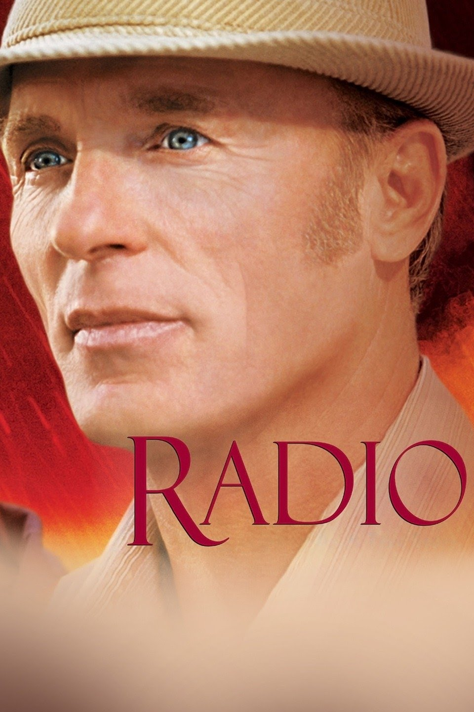
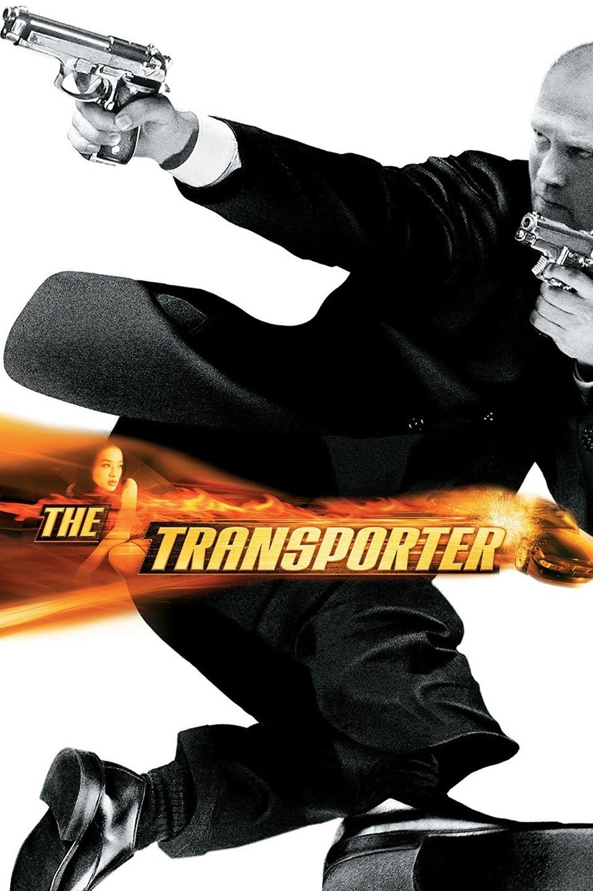
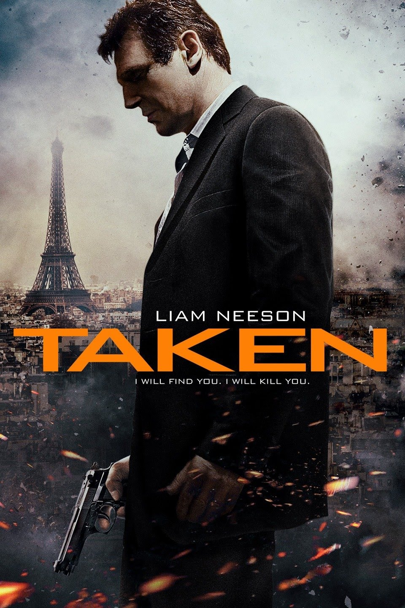

I like the movie Radio because it gives you a view into the life of someone who was born with some disabilities but overcame them.
The Transpoter was an interesting movie because it is packed with action in almost every scene.
Taken is an action packed movie featuring Liam Neeson as a vigilante to goes to save his daughter from criminals.
